Panamá
Casco Viejo, Canal de Panamá, BioMuseo, Islas Taboga y comunidades Guna en San Blas.

Colombia
Cartagena amurallada, Islas del Rosario, Valle del Cauca y comunidades Wayuu en La Guajira.
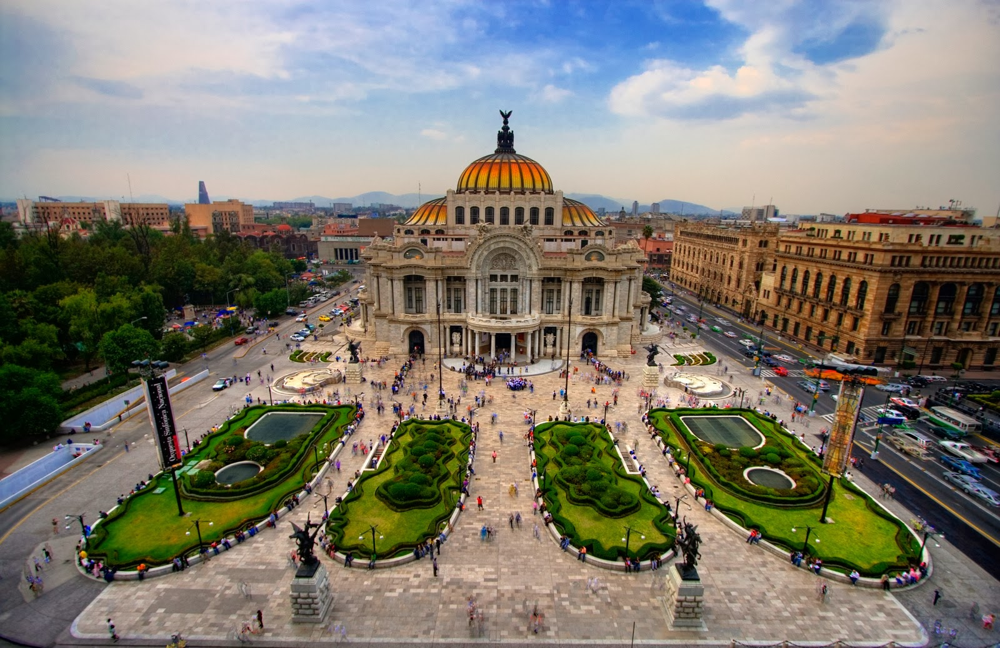
México
Ciudad de México, Teotihuacán, Oaxaca, Cancún y comunidades zapotecas del sur.

Costa Rica
Volcán Arenal, Manuel Antonio, tortugas en Tortuguero y ecoturismo en la selva.

Perú
Machu Picchu, Valle Sagrado, Cusco y rituales andinos con comunidades quechuas.
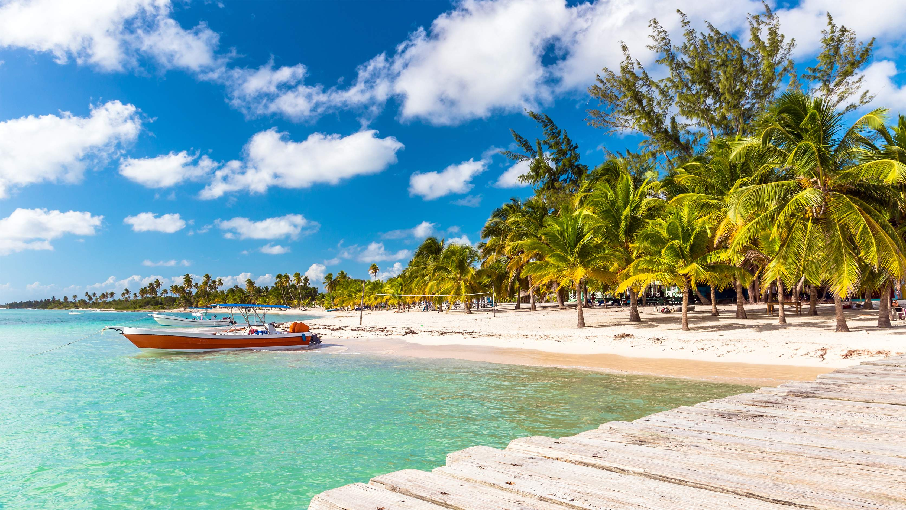
República Dominicana
Punta Cana, Santo Domingo colonial, Samaná y experiencias afrocaribeñas.
Argentina
Buenos Aires, Patagonia, Cataratas del Iguazú, Mendoza y los glaciares patagónicos.
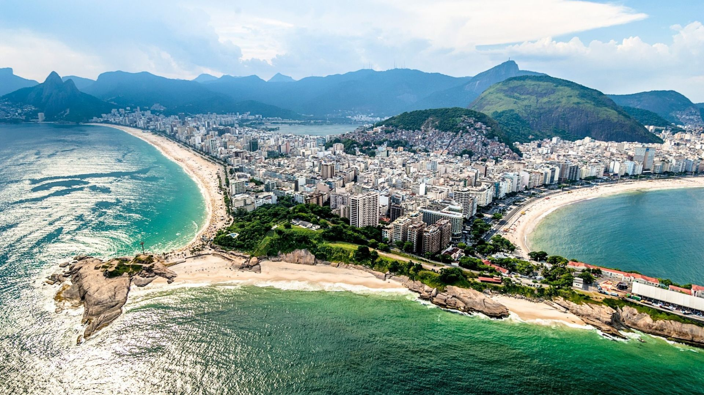
Brasil
Río de Janeiro, São Paulo, Amazonas, Pantanal y las playas de Florianópolis.
Chile
Santiago, Atacama, Torres del Paine, Isla de Pascua y los viñedos del Valle Central.

Ecuador
Islas Galápagos, Quito colonial, selva amazónica y comunidades Kichwa en el Oriente.

Cuba
La Habana Vieja, Varadero, Trinidad colonial, música son y cultura afrocubana.

Guatemala
Tikal, Antigua Guatemala, Lago Atitlán y comunidades mayas del altiplano occidental.
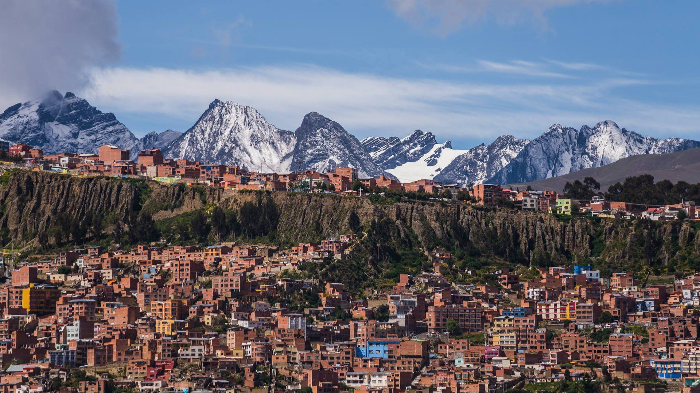
Bolivia
Salar de Uyuni, Lago Titicaca, La Paz y comunidades aymaras en el altiplano.
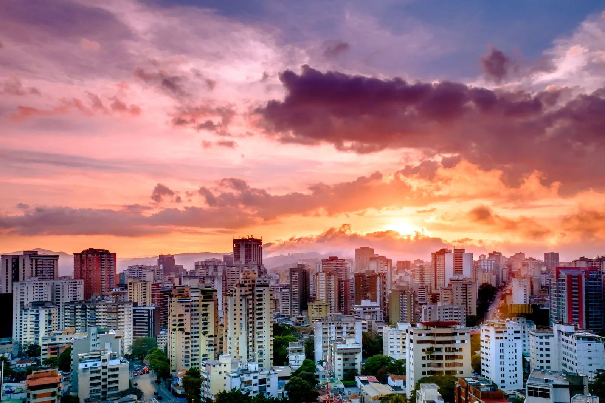
Venezuela
Los Roques, Salto Ángel, Gran Sabana y tepuyes únicos en el mundo.
Uruguay
Montevideo, Punta del Este, Colonia del Sacramento y playas del Río de la Plata.
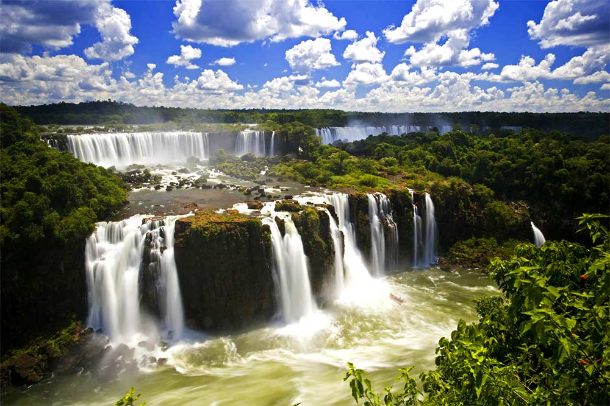
Paraguay
Asunción, misiones jesuíticas, Pantanal paraguayo e historia guaraní.

Honduras
Copán Ruinas, Roatán y la Bahía de las Islas, arrecifes de coral y selva tropical.

Nicaragua
Granada colonial, Isla de Ometepe, Lago Nicaragua y playas vírgenes del Pacífico.

El Salvador
Ruta de las Flores, Lago Coatepeque, surf en El Tunco y ruinas de Tazumal.

Belice
Gran Barrera de Coral, Caye Caulker, ruinas mayas de Caracol y selva tropical.
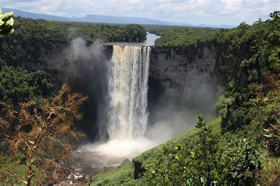
Guyana
Kaieteur Falls, selva amazónica virgen, comunidades indígenas y aves exóticas.
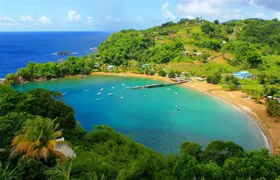
Trinidad y Tobago
Carnaval de Port of Spain, playas de Tobago, selva tropical y cultura calipso.
Jamaica
Montego Bay, Dunn's River Falls, Blue Mountains y la cultura reggae de Bob Marley.
Puerto Rico
San Juan colonial, El Yunque, Vieques bioluminiscente y playas del Caribe.
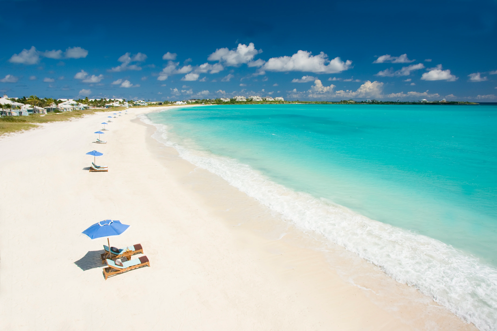
Bahamas
Nassau, Exumas, aguas turquesas, cerdos nadadores y arrecifes de coral.
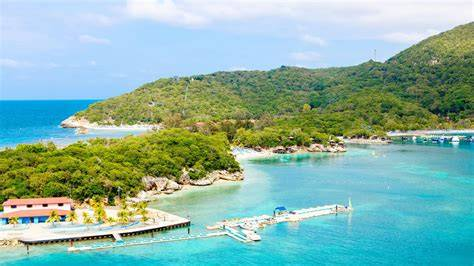
Haití
Citadelle Laferrière, Jacmel colonial, cultura vodou y playas del norte caribeño.
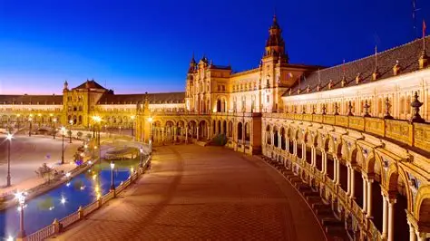
España
Madrid, Barcelona, Sagrada Familia, Alhambra de Granada y las Islas Canarias.
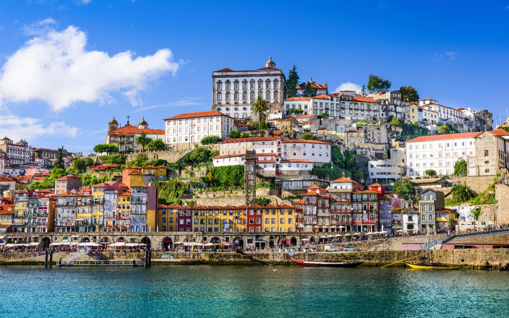
Portugal
Lisboa, Oporto, Sintra, Algarve y la cultura del fado Patrimonio de la Humanidad.
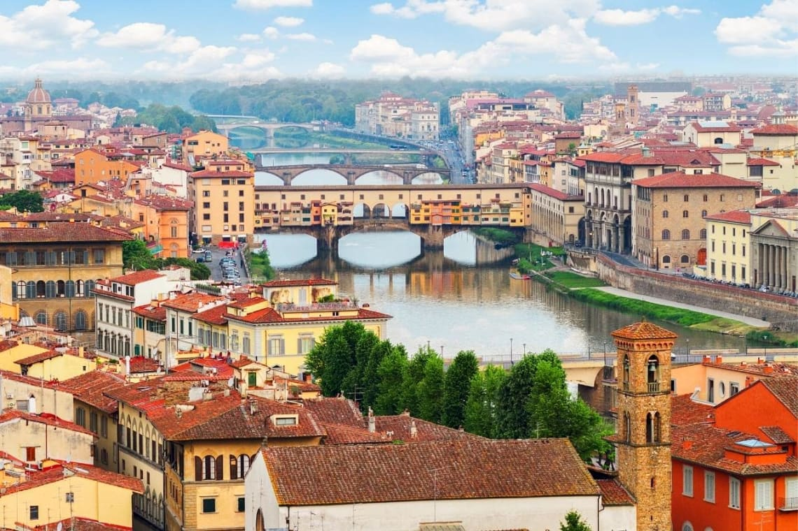
Italia
Roma, Venecia, Florencia, Cinque Terre, Pompeya y la gastronomía mediterránea.
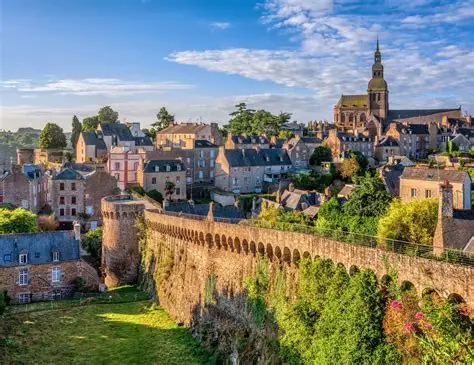
Francia
París, Torre Eiffel, Côte d'Azur, Mont Saint-Michel y los viñedos de Burdeos.
Japón
Tokio, Kioto, Monte Fuji, templos de Nara y la cultura samurái e ikebana.
Tailandia
Bangkok, Chiang Mai, Phuket, templos budistas y rituales del Año Nuevo Songkran.
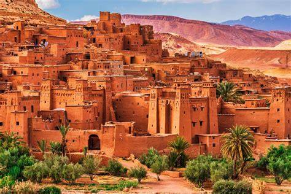
Marruecos
Marrakech, Fez, desierto del Sahara, medinas históricas y la cultura bereber.
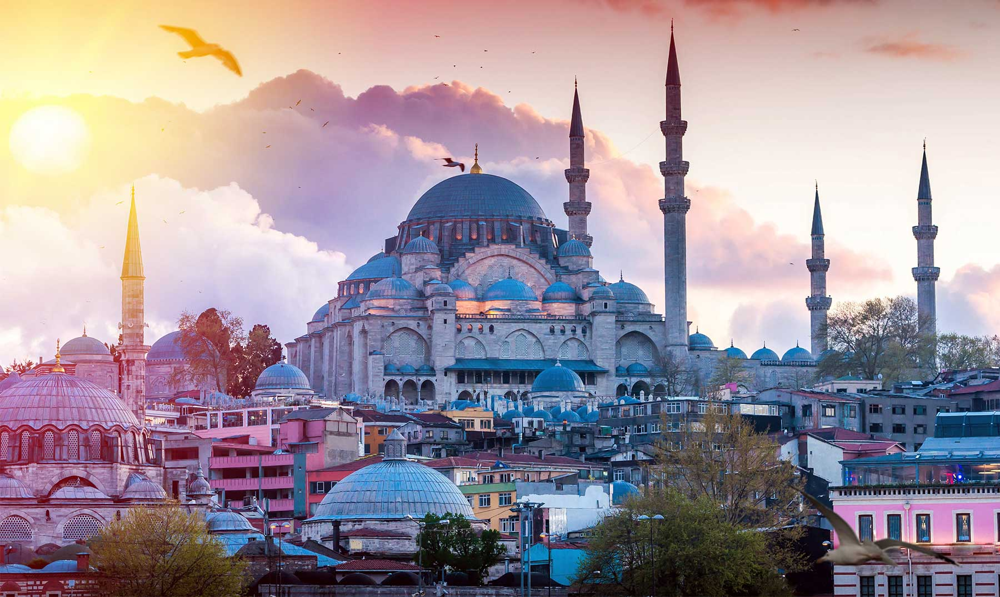
Turquía
Estambul, Capadocia en globo, Pamukkale, Éfeso y el Bósforo entre dos continentes.
Grecia
Atenas, Santorini, Mykonos, Creta y las ruinas del mundo antiguo clásico.
Sudáfrica
Ciudad del Cabo, safari en Kruger, Ruta Jardín y la costa de KwaZulu-Natal.
No se encontraron destinos para "".